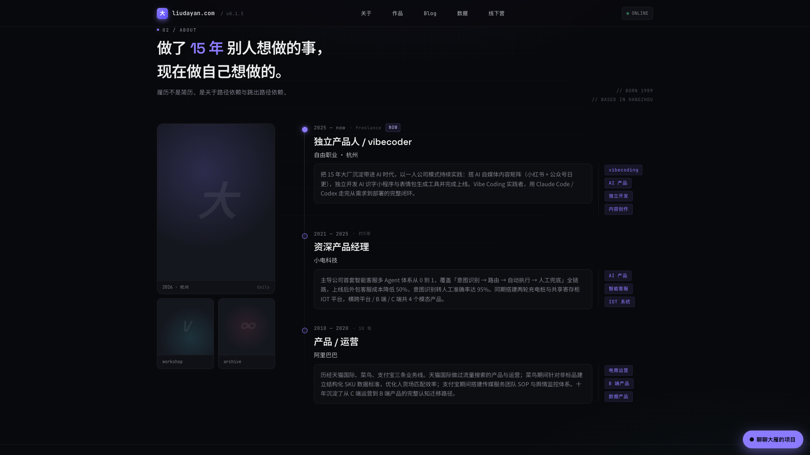

<template id="beat-2-identity-template">
  <div id="beat-2-identity" data-composition-id="beat-2-identity" data-width="1920" data-height="1080">
    <div class="scene scene-identity">
      <div class="bg-grid"></div>
      <div class="band"></div>
      <div class="bg-shot">
        
      </div>
      <div class="stat">15<span>年</span></div>
      <div class="scene-content">
        <div class="eyebrow t-mono">IDENTITY / EXPERIENCE</div>
        <h2 class="headline">把职业路径<br />接到 AI 时代。</h2>
        <p class="copy">阿里运营，小电 PM，自由职业 vibecoder。这个站点把过往经验重新编译成可上线的产品能力。</p>
      </div>
      <div class="path">
        <div class="node">阿里运营</div>
        <div class="arrow"></div>
        <div class="node">小电 PM</div>
        <div class="arrow"></div>
        <div class="node active">vibecoding</div>
      </div>
    </div>
    <style>
      #beat-2-identity {
        width: 100%;
        height: 100%;
        overflow: hidden;
        color: #ededee;
        background: #08090c;
        font-family: "PingFang SC", "Noto Sans SC", sans-serif;
      }
      .scene {
        position: relative;
        width: 100%;
        height: 100%;
        overflow: hidden;
        background: #08090c;
      }
      .bg-grid {
        position: absolute;
        inset: 0;
        background-image:
          linear-gradient(to right, rgba(255,255,255,0.05) 1px, transparent 1px),
          linear-gradient(to bottom, rgba(255,255,255,0.05) 1px, transparent 1px);
        background-size: 64px 64px;
        opacity: 0.22;
      }
      .band {
        position: absolute;
        inset: 0;
        background:
          linear-gradient(90deg, rgba(8,9,12,0.95) 0%, rgba(8,9,12,0.7) 42%, rgba(8,9,12,0.3) 64%, rgba(8,9,12,0.92) 100%);
      }
      .bg-shot {
        position: absolute;
        right: 0;
        top: -40px;
        width: 1220px;
        height: 1160px;
        opacity: 0.66;
      }
      .bg-shot img {
        width: 100%;
        height: 100%;
        object-fit: cover;
        object-position: center top;
      }
      .scene-content {
        position: absolute;
        left: 140px;
        top: 150px;
        width: 620px;
        display: flex;
        flex-direction: column;
        gap: 24px;
      }
      .t-mono {
        font-family: "JetBrains Mono", "SF Mono", monospace;
        letter-spacing: 0.14em;
      }
      .eyebrow {
        font-size: 16px;
        color: #c8bfff;
      }
      .headline {
        margin: 0;
        font-size: 92px;
        line-height: 1.02;
        font-weight: 700;
      }
      .copy {
        margin: 0;
        font-size: 26px;
        line-height: 1.5;
        color: #b8babf;
      }
      .stat {
        position: absolute;
        left: 118px;
        bottom: 168px;
        font-size: 240px;
        line-height: 1;
        font-weight: 700;
        color: rgba(139,124,255,0.9);
        text-shadow: 0 0 40px rgba(139,124,255,0.22);
      }
      .stat span {
        font-size: 110px;
        color: #ededee;
        margin-left: 12px;
      }
      .path {
        position: absolute;
        left: 760px;
        bottom: 140px;
        display: flex;
        align-items: center;
        gap: 18px;
      }
      .node {
        padding: 18px 22px;
        border-radius: 16px;
        border: 1px solid rgba(255,255,255,0.1);
        background: rgba(15,17,22,0.86);
        font-size: 24px;
        color: #b8babf;
      }
      .node.active {
        color: #ededee;
        border-color: rgba(139,124,255,0.34);
        box-shadow: 0 0 0 1px rgba(139,124,255,0.12), 0 0 36px rgba(139,124,255,0.14);
      }
      .arrow {
        width: 76px;
        height: 2px;
        background: linear-gradient(90deg, rgba(139,124,255,0.15), rgba(139,124,255,0.9));
        position: relative;
      }
      .arrow::after {
        content: "";
        position: absolute;
        right: -2px;
        top: -4px;
        border-left: 10px solid rgba(139,124,255,0.9);
        border-top: 5px solid transparent;
        border-bottom: 5px solid transparent;
      }
    </style>
    <script src="https://cdn.jsdelivr.net/npm/gsap@3.14.2/dist/gsap.min.js"></script>
    <script>
      window.__timelines = window.__timelines || {};
      const tl = gsap.timeline({ paused: true });
      tl.from(".bg-shot", { x: 80, scale: 1.04, opacity: 0, duration: 1, ease: "power2.out" }, 0);
      tl.from(".eyebrow", { y: 20, opacity: 0, duration: 0.45, ease: "power2.out" }, 0.15);
      tl.from(".headline", { y: 52, opacity: 0, duration: 0.75, ease: "power3.out" }, 0.2);
      tl.from(".copy", { y: 26, opacity: 0, duration: 0.55, ease: "power2.out" }, 0.48);
      tl.from(".stat", { scale: 0.82, opacity: 0, duration: 0.8, ease: "power3.out" }, 0.15);
      tl.from(".node", { y: 24, opacity: 0, duration: 0.5, ease: "power2.out", stagger: 0.14 }, 0.55);
      tl.from(".arrow", { scaleX: 0, transformOrigin: "left center", duration: 0.35, ease: "power2.out", stagger: 0.1 }, 0.75);
      tl.to(".bg-shot", { y: -22, duration: 4.8, ease: "none" }, 0);
      tl.to(".stat", { textShadow: "0 0 60px rgba(139,124,255,0.34)", duration: 1.2, repeat: 0, yoyo: true }, 1.2);
      window.__timelines["beat-2-identity"] = tl;
    </script>
  </div>
</template>
